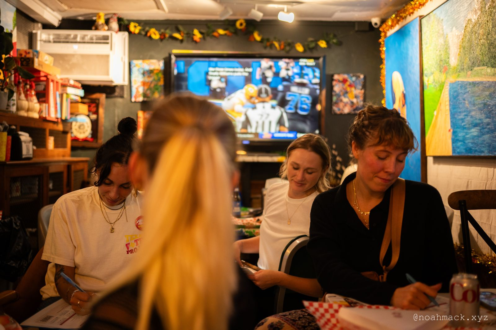
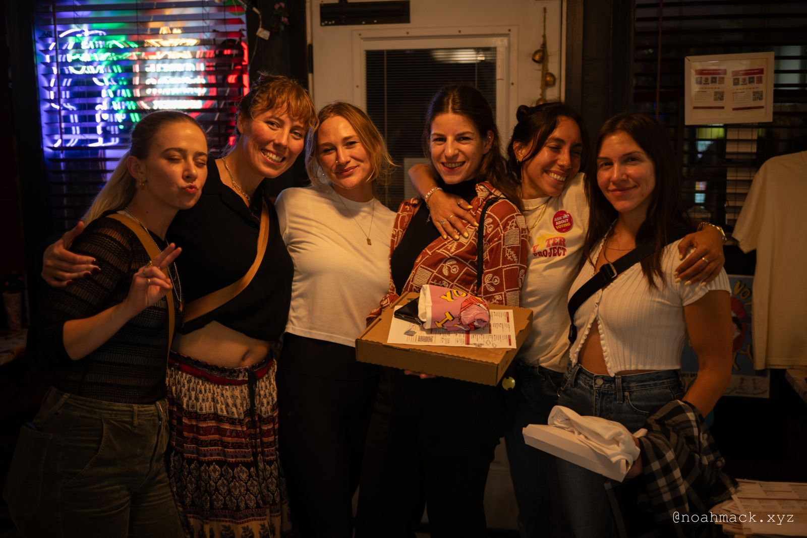
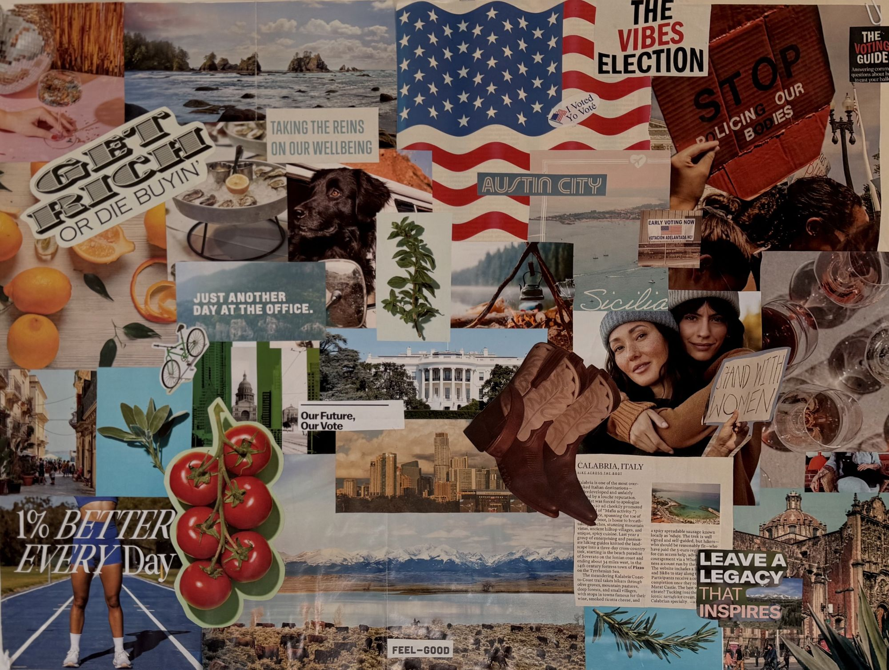
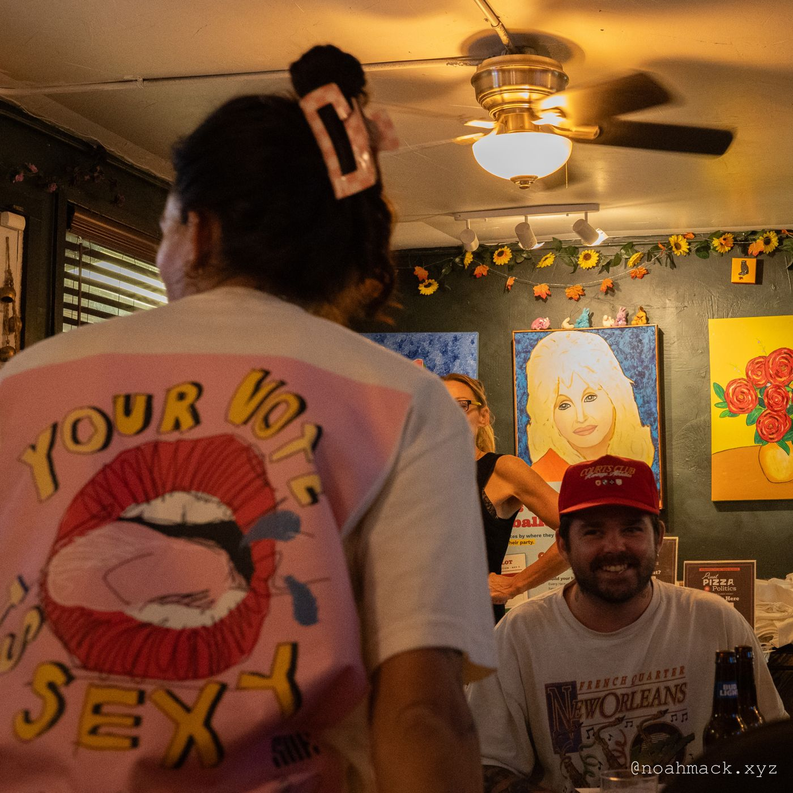

Information infrastructure
Nonpartisan resources that start a level earlier than most, explaining what an office actually controls before asking who should hold it.
See Election PrepTheory of change
TVP isn't a typical voter-guide organization. Here's the thinking behind why we build both information and community, and why neither one works alone.
The problem
Young Texans don't skip elections because they don't care. They skip them because formal political institutions routinely overlook them, and because the resources meant to help usually assume a level of context most people were never given.
That distrust and disconnection show up as low turnout. But the real gap is that most young people have never been part of a community that made civic life feel like theirs.

A great voter guide can tell someone exactly how to register and where to vote. It can't give them a reason to want to. That reason comes from belonging somewhere, like a bar trivia night, a board game table or a run club, where showing up for your community starts to feel like second nature, and voting is one more way you show up.
Who this is for
Young people in general have been ignored or left out of the conversation. TVP was set up with the understanding that voters under 35, even with resources, have suffered from a lack of civics education and responsive government.
We work to engage more vulnerable communities just as much as other young people, because we can't take anyone for granted.
What we do

Nonpartisan resources that start a level earlier than most, explaining what an office actually controls before asking who should hold it.
See Election Prep
Real, recurring third places, like bar nights, game nights and run clubs, where trust and turnout grow out of the same soil.
See Get InvolvedThe bigger picture
Civic participation isn't a straight line or a single trip to the ballot box. It's two loops, and TVP tries to meet people wherever they are on them.
Then back to the start, bringing a friend. This loop repeats every election.
For anyone ready to take on more, all the way to running for office.
Where the look comes from
Before we redesigned anything, I made a vision board: magazine clippings, hand-drawn type, photos of people actually having fun together. Civic life should feel like that, layered and a little messy and full of people, not like a form you fill out once every two years.


What we believe
If we want higher participation, we have to build communities people actually want to participate in.
What Texas voters said, the risk hiding in the win, and why TVP is built for what comes next.
Read the hot take